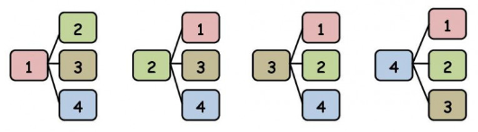
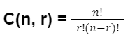
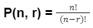
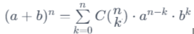
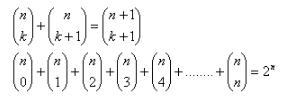
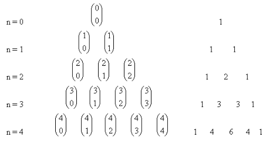

Kombinatorika
Definícia
Kombinatorika je esenciálnou súčasťou matematiky, ktorá sa venuje rôznym spôsobom organizovania a manipulácie s konečnými množinami. Je to nástroj, ktorý nachádza uplatnenie v mnohých odvetviach matematiky, od teórie čísel až po informatiku a kryptografiu.
Kombinatorika hrá kľúčovú úlohu v analýze a štúdiu grafov. Počet rôznych grafov a výskum ich štruktúr sú dôležité aspekty kombinatoriky v teórii grafov.
Kombinácie
Kombinácie sa týkajú výberu prvkov zo sady bez ohľadu na ich poradie. Napríklad, keď vyberáme tímovú zostavu, poradie hráčov nie je dôležité. Kombinačný vzťah pre výber r prvkov zo sady n prvkov je daný vzťahom:
Variácie
Variácie, na druhej strane, zohľadňujú poradie prvkov. Ak napríklad vytvárame postupnosť čísel, poradie je kľúčové. Výpočet variácií pre výber r prvkov zo sady n prvkov je daný vzťahom:
Binomická veta
Binomická veta poskytuje expanziu mocniny binomického výrazu. Jej matematický zápis pre výraz (a+b)n je:
taktiež platí:
Pascalov trojuholník
Pascalov trojuholník je usporiadaný trojuholník čísel, kde každé číslo v trojuholníku je súčet dvoch čísel nad ním v predchádzajúcom riadku. Prvý riadok obsahuje číslo 1, druhý riadok obsahuje čísla 1, 1, tretí riadok obsahuje 1, 2, 1, a tak ďalej.
